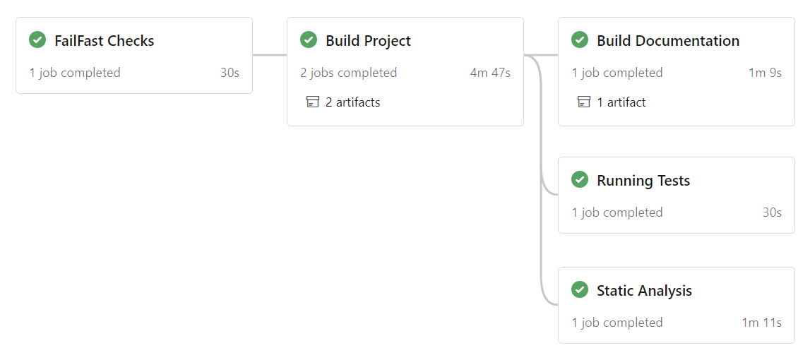
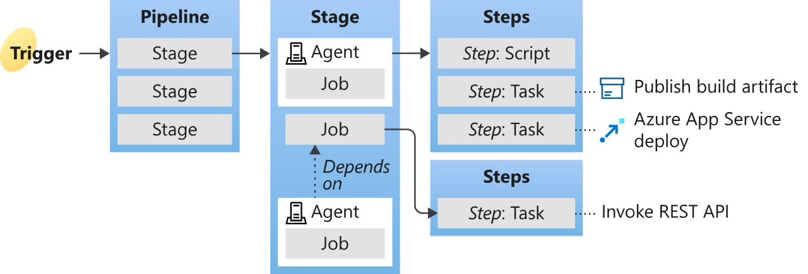

Intro To CI
Automating Development Tasks
What is CI/CD? How Does It Help You?
- Makes the development process easier
- Automating development tasks
- Integrate changes automatically
- Build automatically
- Test your project automatically
- Release automatically
- ...
What is CI/CD? How Does It Help You?

Different Provider Types for CI/CD
| On Premise |
Cloud Managed / SaaS |
|
|
| A physical machine that you setup |
Managed by a cloud service provider or SaaS |
Different Provider Types for CI/CD
| Features |
Jenkins |
CircleCI |
Azure |
Gitlab |
| Self-Hosting |
|
|
|
|
| Pipeline Configuration |
Groovy |
Yaml |
Yaml/UI |
Yaml |
| Free Minutes |
|
6000 |
1800 |
50000 |
| Open Source |
|
|
|
|
Pipeline Configuration (Azure)
stages:
- stage: failfast
displayName: FailFast Checks
jobs:
- job: failfast
displayName: Failfast Scripts
container: 'ubuntu18.04-gcc11-conan2-doxygen1.9.6'
continueOnError: false
steps:
- bash: scripts/shellcheck.sh
displayName: Linting Shell
workingDirectory: $(Build.SourcesDirectory)
- bash: scripts/cpp-lint.sh
displayName: Linting CPP files
workingDirectory: $(Build.SourcesDirectory)
Pipeline Configuration (CircleCI)
# Define a job to be invoked later in a workflow.
# See: https://circleci.com/docs/2.0/configuration-reference/#jobs
jobs:
build:
# Specify the execution environment. You can specify an image from Dockerhub or use one of our Convenience Images from CircleCI's Developer Hub.
# See: https://circleci.com/docs/2.0/configuration-reference/#docker-machine-macos-windows-executor
docker:
- image: mattgomes28/cpp-ubuntu:0.2
environment:
CONAN_SYSREQUIRES_MODE: enabled
# Add steps to the job
# See: https://circleci.com/docs/2.0/configuration-reference/#steps
steps:
- checkout
- run:
name: "Getting CMake & Conan version"
command: |
cmake --version
conan --version
Pipeline Configuration (Jenkins)
pipeline {
agent any
options {
// Timeout counter starts AFTER agent is allocated
timeout(time: 1, unit: 'SECONDS')
}
stages {
stage('Example') {
steps {
echo 'Hello World'
}
}
}
}
Jargon - Pipeline Components
